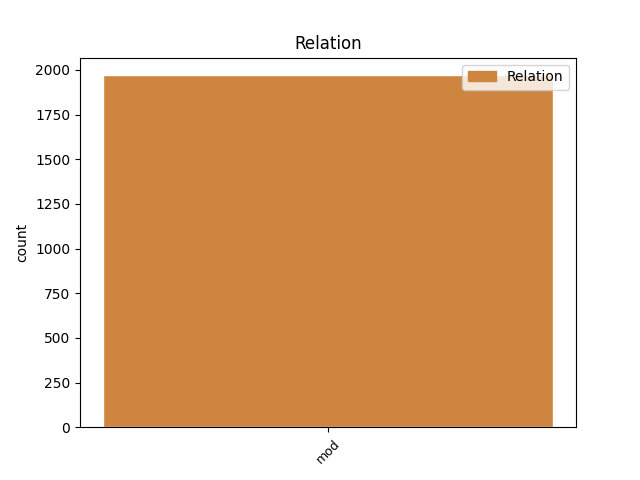
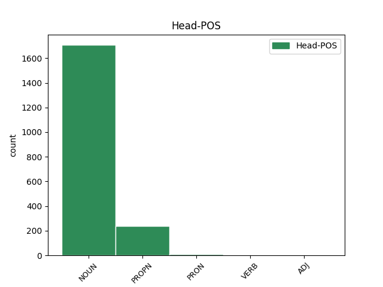
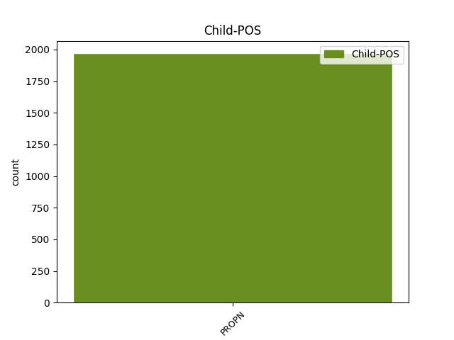

Distribution of features within this leaf



Agreement Rules sorted by frequency.
- When the dependent token is the modifer(mod) of the head token, and the dependent token is PROPN.
1 NOI _ _ _ _ 0 _ _ _
2 GRIGORIE _ _ _ _ 0 _ _ _
3 GHICA _ _ _ _ 0 _ _ _
4 VV. _ _ _ _ 0 _ _ _
5 , _ _ _ _ 0 _ _ _
6 DOMN domn NOUN Ncmsrn Case=Acc,Nom|Definite=Ind|Gender=Masc|Number=Sing 0 _ _ _
7 ŢĂRII Țară PROPN Npfsoy Case=Dat,Gen|Definite=Def|Gender=Fem|Number=Sing 6 mod _ ref=COMPLETARE.8
8 ROMÎNEŞTI _ _ _ _ 0 _ _ _
9 După _ _ _ _ 0 _ _ _
10 necontenitele _ _ _ _ 0 _ _ _
11 prigoniri _ _ _ _ 0 _ _ _
12 ce _ _ _ _ 0 _ _ _
13 să _ _ _ _ 0 _ _ _
14 urma _ _ _ _ 0 _ _ _
15 pînă _ _ _ _ 0 _ _ _
16 acum _ _ _ _ 0 _ _ _
17 între _ _ _ _ 0 _ _ _
18 stăpînii _ _ _ _ 0 _ _ _
19 moșiilor _ _ _ _ 0 _ _ _
20 cu _ _ _ _ 0 _ _ _
21 clăcașii _ _ _ _ 0 _ _ _
22 lor _ _ _ _ 0 _ _ _
23 asupra _ _ _ _ 0 _ _ _
24 ponturilor _ _ _ _ 0 _ _ _
25 de _ _ _ _ 0 _ _ _
26 mai _ _ _ _ 0 _ _ _
27 sus _ _ _ _ 0 _ _ _
28 arătate _ _ _ _ 0 _ _ _
29 : _ _ _ _ 0 _ _ _
30 nefiind _ _ _ _ 0 _ _ _
31 deslușite _ _ _ _ 0 _ _ _
32 întru _ _ _ _ 0 _ _ _
33 această _ _ _ _ 0 _ _ _
34 Pravilă _ _ _ _ 0 _ _ _
35 a _ _ _ _ 0 _ _ _
36 pămîntului _ _ _ _ 0 _ _ _
37 . _ _ _ _ 0 _ _ _
Disagree Examples:
1 Și _ _ _ _ 0 _ _ _
2 tîmplîndu _ _ _ _ 0 _ _ _
3 -să _ _ _ _ 0 _ _ _
4 o _ _ _ _ 0 _ _ _
5 zi _ _ _ _ 0 _ _ _
6 de _ _ _ _ 0 _ _ _
7 treabă _ _ _ _ 0 _ _ _
8 a _ _ _ _ 0 _ _ _
9 nașterii _ _ _ _ 0 _ _ _
10 lui _ _ _ _ 0 _ _ _
11 Irod _ _ _ _ 0 _ _ _
12 , _ _ _ _ 0 _ _ _
13 în _ _ _ _ 0 _ _ _
14 carea _ _ _ _ 0 _ _ _
15 făcea _ _ _ _ 0 _ _ _
16 cină _ _ _ _ 0 _ _ _
17 boiarilor _ _ _ _ 0 _ _ _
18 săi _ _ _ _ 0 _ _ _
19 și _ _ _ _ 0 _ _ _
20 căpitanilor _ _ _ _ 0 _ _ _
21 și _ _ _ _ 0 _ _ _
22 mai _ _ _ _ 0 _ _ _
23 marilor mare NOUN Ncfpoy Case=Dat,Gen|Definite=Def|Gender=Fem|Number=Plur 0 _ _ _
24 a _ _ _ _ 0 _ _ _
25 Galileei Galileea PROPN Npfsoy Case=Dat,Gen|Definite=Def|Gender=Fem|Number=Sing 23 mod _ ref=MARC6.21|SpaceAfter=No
26 . _ _ _ _ 0 _ _ _
1 Și _ _ _ _ 0 _ _ _
2 de _ _ _ _ 0 _ _ _
3 acolea _ _ _ _ 0 _ _ _
4 sculîndu _ _ _ _ 0 _ _ _
5 -să _ _ _ _ 0 _ _ _
6 , _ _ _ _ 0 _ _ _
7 mearse _ _ _ _ 0 _ _ _
8 în _ _ _ _ 0 _ _ _
9 hotarăle hotar NOUN Ncfpry Case=Acc,Nom|Definite=Def|Gender=Fem|Number=Plur 0 _ _ _
10 Tirului Tir PROPN Npmsoy Case=Dat,Gen|Definite=Def|Gender=Masc|Number=Sing 9 mod _ ref=MARC7.23
11 și _ _ _ _ 0 _ _ _
12 a _ _ _ _ 0 _ _ _
13 Sidonului _ _ _ _ 0 _ _ _
14 . _ _ _ _ 0 _ _ _
1 Atunci _ _ _ _ 0 _ _ _
2 Iisus _ _ _ _ 0 _ _ _
3 eșind _ _ _ _ 0 _ _ _
4 din _ _ _ _ 0 _ _ _
5 hotarăle hotar NOUN Ncfpry Case=Acc,Nom|Definite=Def|Gender=Fem|Number=Plur 0 _ _ _
6 Tirului Tir PROPN Npmsoy Case=Dat,Gen|Definite=Def|Gender=Masc|Number=Sing 5 mod _ ref=MARC7.31
7 și _ _ _ _ 0 _ _ _
8 Sidonului _ _ _ _ 0 _ _ _
9 , _ _ _ _ 0 _ _ _
10 veni _ _ _ _ 0 _ _ _
11 la _ _ _ _ 0 _ _ _
12 marea _ _ _ _ 0 _ _ _
13 Galileiului _ _ _ _ 0 _ _ _
14 , _ _ _ _ 0 _ _ _
15 pren _ _ _ _ 0 _ _ _
16 mijlocul _ _ _ _ 0 _ _ _
17 hotarălor _ _ _ _ 0 _ _ _
18 a _ _ _ _ 0 _ _ _
19 zeace _ _ _ _ 0 _ _ _
20 orașă _ _ _ _ 0 _ _ _
21 . _ _ _ _ 0 _ _ _
1 Și _ _ _ _ 0 _ _ _
2 numai _ _ _ _ 0 _ _ _
3 cît _ _ _ _ 0 _ _ _
4 întrînd _ _ _ _ 0 _ _ _
5 în _ _ _ _ 0 _ _ _
6 corabie _ _ _ _ 0 _ _ _
7 cu _ _ _ _ 0 _ _ _
8 ucenicii _ _ _ _ 0 _ _ _
9 lui _ _ _ _ 0 _ _ _
10 veni _ _ _ _ 0 _ _ _
11 în _ _ _ _ 0 _ _ _
12 părțile parte NOUN Ncfpry Case=Acc,Nom|Definite=Def|Gender=Fem|Number=Plur 0 _ _ _
13 Dalmanutei Dalmanuta PROPN Npfsoy Case=Dat,Gen|Definite=Def|Gender=Fem|Number=Sing 12 mod _ ref=MARC8.10|SpaceAfter=No
14 . _ _ _ _ 0 _ _ _
1 Și _ _ _ _ 0 _ _ _
2 eși _ _ _ _ 0 _ _ _
3 Iisus _ _ _ _ 0 _ _ _
4 și _ _ _ _ 0 _ _ _
5 ucenicii _ _ _ _ 0 _ _ _
6 lui _ _ _ _ 0 _ _ _
7 în _ _ _ _ 0 _ _ _
8 satele sat NOUN Ncfpry Case=Acc,Nom|Definite=Def|Gender=Fem|Number=Plur 0 _ _ _
9 Chesariei Cezareea PROPN Npfsoy Case=Dat,Gen|Definite=Def|Gender=Fem|Number=Sing 8 mod _ ref=MARC8.27
10 lui _ _ _ _ 0 _ _ _
11 Filip _ _ _ _ 0 _ _ _
12 și _ _ _ _ 0 _ _ _
13 pre _ _ _ _ 0 _ _ _
14 cale _ _ _ _ 0 _ _ _
15 întreba _ _ _ _ 0 _ _ _
16 pre _ _ _ _ 0 _ _ _
17 ucenicii _ _ _ _ 0 _ _ _
18 lui _ _ _ _ 0 _ _ _
19 , _ _ _ _ 0 _ _ _
20 zicînd _ _ _ _ 0 _ _ _
21 lor _ _ _ _ 0 _ _ _
22 : _ _ _ _ 0 _ _ _
23 Cine _ _ _ _ 0 _ _ _
24 Mă _ _ _ _ 0 _ _ _
25 zic _ _ _ _ 0 _ _ _
26 oamenii _ _ _ _ 0 _ _ _
27 a _ _ _ _ 0 _ _ _
28 fi _ _ _ _ 0 _ _ _
29 ? _ _ _ _ 0 _ _ _